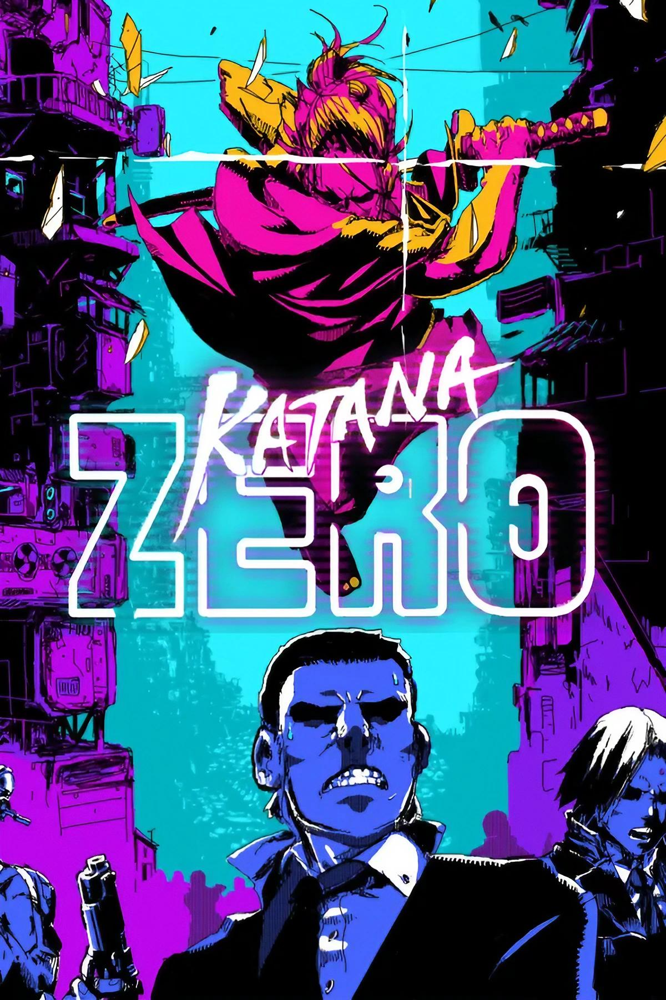
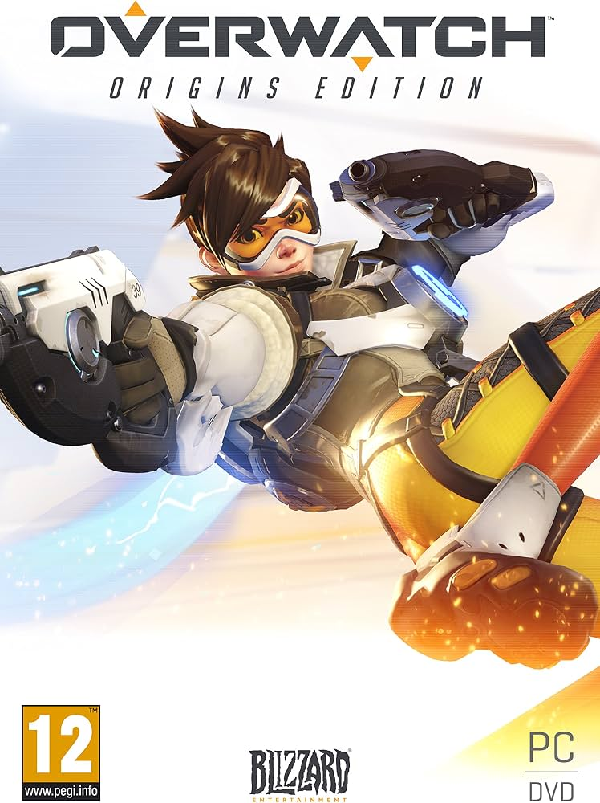
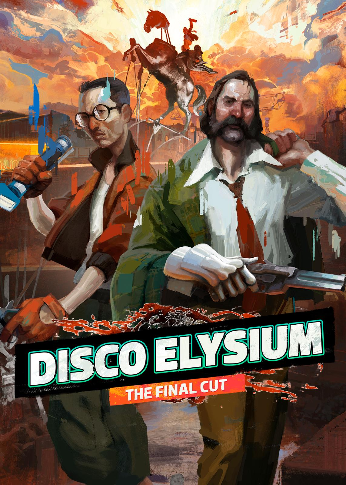
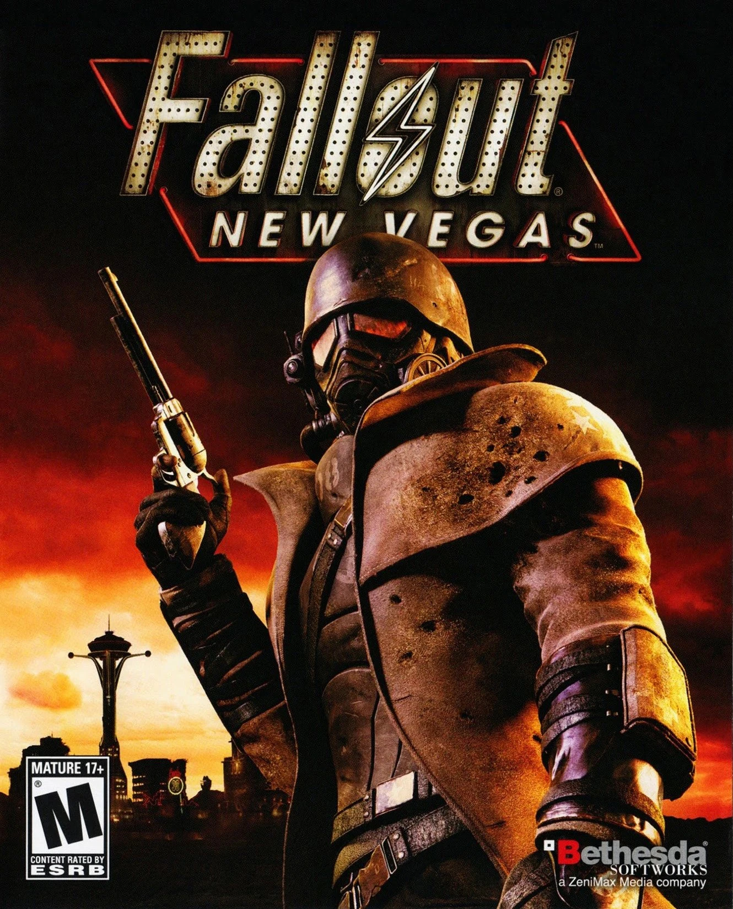
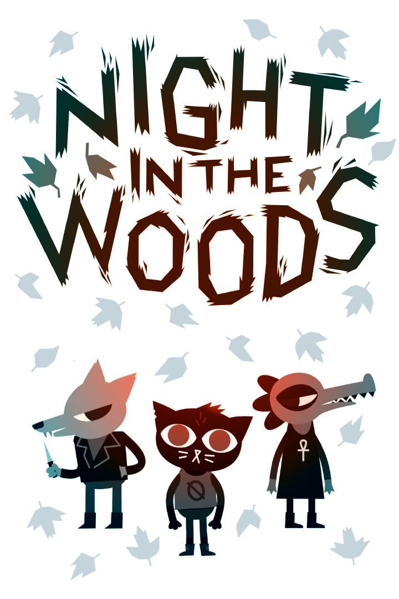

This is a list of my current favorite games, and the ones I recommend the most for you to play! All of these games are available to play on PC, as that is my setup of choice. If my review happens to intrigue you, check out the game under the "Games" tab and click to visit its site.

Katana Zero
Platformer
Katana Zero: 10/10
Possibly my favorite (and the most underrated) game of all time. I have never been very big into pixel platformers but the story, mechanics, and atmosphere of this game are just incredible. If you like decision-making gameplay, cyberpunk aesthetic, awesome samurai, or defeating drug rings, this game has something for you.

Overwatch
Class-based Shooter
Overwatch: 7/10
This game is like an addiction that can never be fulfilled, and always keeps me coming back no matter how bad it is for me. Really though, it's one of the pioneers of new age Class-based Hero Shooters and it offers a lot of unique gameplay. It offers many different playing styles and levels of intensity and is truly open to anyone.

Disco Elysium
AdventureRPGPoint and click
Disco Elysium: 8/10
Disco Elysium rewrites the rules of classic point-and-click detective games, making each interaction a gamble with your inner consciousness. This game is incredibly thorough and has what feels like an infinite amount of dialogue and endings. The more you uncover, the more curious you become as you try to unravel your own identity and discover the identity of the killer.

Fallout New Vegas
ActionRPG
Fallout New Vegas: 8/10
This game will always hold a special place in my heart, I often find myself returning to its world. Despite the various bugs and excessive time spent walking, the environment and storytelling immerse you in a world of apocalyptic ruin and quests. Fallout New Vegas will forever be a classic and stands as one of the best games of the franchise.

Night in the Woods
NarrativeAdventure
Night in the Woods: 7/10
This narrative adventure is deeply heartfelt and equally hilarious, capturing the essence of small-town life. With bizarre twists and immaculate character-building, Night in the Woods hooked me into the lives of these silly animals. This is my go to feel-good game when the air starts to get a bit chilly or I'm missing home.